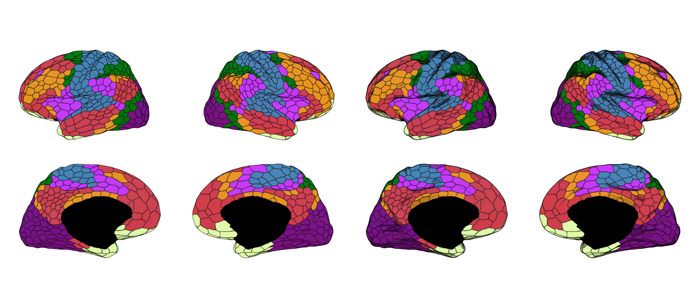
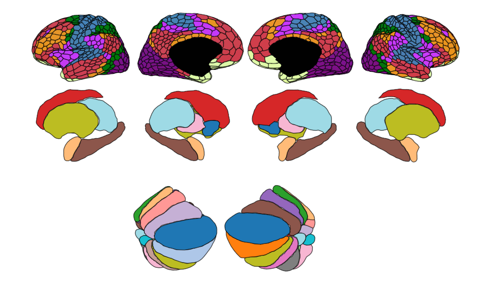
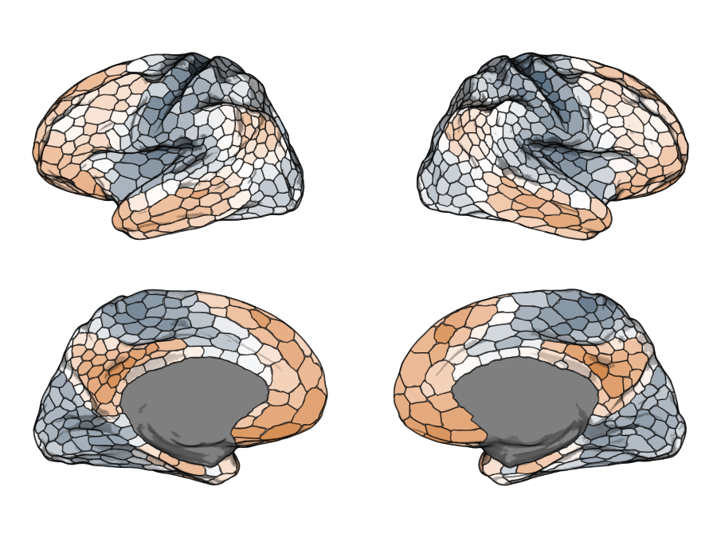
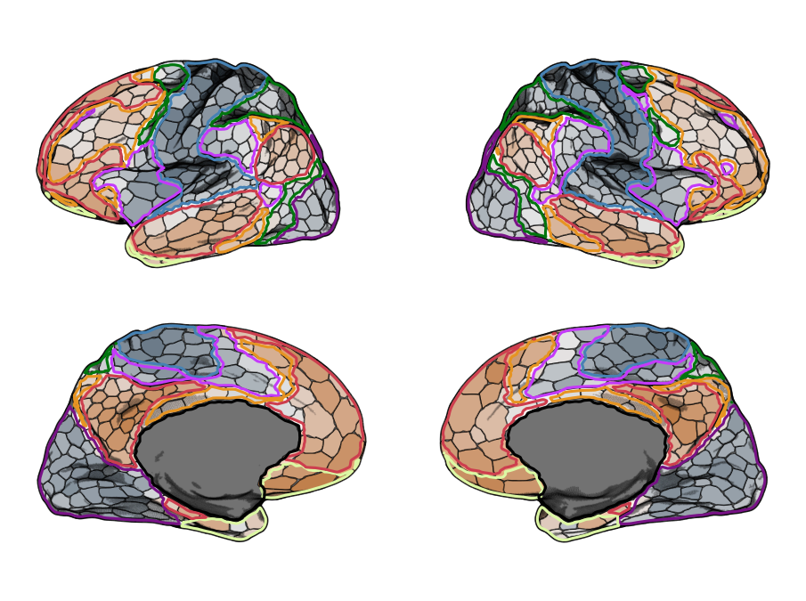

Plotting ggbrat atlases
plotting-atlases.RmdAny ggbrat atlas is just a Simple Features
object/collection like any other. You load the atlas up, join it with
your data, and plot it. All utilities and functionality that support
geom_sf() can be used with a ggbrat atlas.
Start with a premade atlas
load_atlas() downloads an atlas when necessary, stores
it in the user-specific ggbrat cache, and returns the R object:
schaefer <- load_atlas("Schaefer2018_1000Parcels_7Networks_order")Premade surface atlases are lists containing the region polygons and,
where available, silhouettes, shading points, cortex points, and saved
camera positions. To get the “3D look” with a 2D ggplot atlas, we are
using a trick. Basically, we take a fraction of all the vertices from
the original surface mesh, sampled by their density, and plot them as an
additional layer. You control the strength of the shade by adjusting the
size and opacity of the multipoints. In the ggbrat list the main atlas
is in atlas, and if you want to add shading you find
multipoint geometries in shade.
p1 <- ggplot(schaefer$atlas) +
geom_sf(aes(fill = color), linewidth = 0.4, show.legend = FALSE) +
scale_fill_identity() +
theme_void()
p2 <- ggplot(schaefer$atlas) +
geom_sf(aes(fill = color), linewidth = 0.4, show.legend = FALSE) +
geom_sf(data = schaefer$shade, size = 0.05, alpha = 0.05) +
scale_fill_identity() +
theme_void()
patchwork::wrap_plots(list(p1, p2))
Note that the multipoints are relatively computationally expensive to plot, so if you just want to quickly visualize something it is better to turn that layer off until you want to render the proper figure.
Reposition the views
reposition_atlas() infers the plotted panels in the
order they first appear in the data and assigns them A,
B, C, and so on. For surface atlases, each
view/hemisphere combination is a panel. Volumetric atlases simply use
their distinct view values.
# Put the first four panels on one line.
schaefer <- reposition_atlas(schaefer, layout = "ABCD")
# Or arrange the same panels in a two-by-two grid.
schaefer <- reposition_atlas(schaefer, layout = "AB\nCD")The same translations are applied to the atlas, shade, silhouette,
and glass-cortex layers. Use ., #, or a
literal space for an empty grid cell:
schaefer <- reposition_atlas(schaefer, layout = "AB.\n.CD")The horizontal_gap and vertical_gap
arguments control the space between panel bounding boxes. Inspect
attr(schaefer, "layout_key") to see which view—and, where
applicable, hemisphere—was assigned to each letter.
Resize a complete atlas
When combining atlases that occupy different coordinate ranges you can scale one of them as a complete object to get make sure they are comparable in size.
atlas_size() scales the entire layout around its centre,
including the distances between views. It applies the same
transformation to all spatial layers in the atlas object, so polygons,
shading, silhouettes, and glass-cortex points remain aligned. Values
above one enlarge the atlas; values between zero and one shrink it.
schaefer <- load_atlas("Schaefer2018_1000Parcels_7Networks_order")
yeo <- load_atlas("Yeo2011_7Networks_N1000")
suit <- load_atlas("SUIT_cerebellar_lobule")
schaefer$atlas |> reposition_atlas(layout = "BACD") |>
rbind(aseg_comp$atlas |> atlas_size(2.5) |> reposition_atlas(layout = "####\nCABD", horizontal_gap = 0.2)) |>
rbind(suit$atlas |> atlas_size(2.5) |> reposition_atlas(layout = "####\n####\n#AB") ) |>
ggplot()+
geom_sf(aes(fill = color), linewidth = 0.5, show.legend = FALSE) +
scale_fill_identity() +
theme_void()
Join the atlas with data
The package includes the first five cortical gradients from Margulies et al. (2016), represented for the 1,000 parcels of the Schaefer atlas. We use them here as example data.
data("gradients")
schaefer$atlas |>
left_join(grads, by = "region") |>
ggplot() +
geom_sf(aes(fill = gradient1), linewidth = 0.5, show.legend = FALSE) +
geom_sf(data = schaefer$shade, size = 0.05, alpha = 0.05) +
scale_fill_gradient2(high = "#D38A4E", low = "#3F596D") +
theme_void()
Add another atlas
We can even add an additional layer from a different atlas, which may
be useful if you are interested in your brain statistics across various
networks. Since the polygons boundaries sit tightly we shrink and smooth
them a little bit to get a nicer looking overlay using the helper
functions shrink_polygons() and
smooth_polygons().
yeo <- load_atlas("Yeo2011_7Networks_N1000")
yeo$atlas <- yeo$atlas |>
shrink_polygons(dist = 0.007) |>
smooth_polygons(smoothness = 5)
schaefer$atlas |>
left_join(grads, by = "region") |>
ggplot() +
geom_sf(aes(fill = gradient1), linewidth = 0.5, show.legend = FALSE) +
geom_sf(data = schaefer$shade, size = 0.1, alpha = 0.075) +
geom_sf(data = yeo$atlas, aes(color = color), size = 1) +
scale_fill_gradient2(high = "#D38A4E", low = "#3F596D") +
scale_color_identity() +
theme_void()
Animate brain data
You can also very easily animate your brain data using these atlases,
with the help of the fantastic gganimate. Here I am also
showcasing another way to represent the cortical texture, namely through
multipoints instead of polygons. I think this is probably more an
aesthetic thing and likely not as useful from a scientific point of
view, but I think it’s pretty cool. It makes a purely pial surface
actually look quite okay in 2D. You can generate such atlases by setting
create_polygons to FALSE.
schaefer1k <- download_annotation(
"annotation-schaefer2018-1000parcels-7networks-order"
)
atlas_point <- build_atlas_surf(
surface = "pial",
annot_path = schaefer1k,
create_polygons = FALSE,
shade_keep_quantile = 0.4,
hemi = "right",
n_views = 1
)
library(gganimate)
animation <- atlas_point$atlas |>
left_join(
grads |> mutate(across(where(is.numeric), scale)),
by = "region"
) |>
pivot_longer(
starts_with("grad"),
names_to = "gradient",
values_to = "values"
) |>
ggplot() +
geom_sf(aes(color = values), size = 0.05, show.legend = FALSE) +
geom_sf(
data = atlas_point$shade,
size = 0.1,
alpha = 0.075,
color = "black"
) +
scale_color_gradient2(high = "#D38A4E", low = "#3F596D") +
theme_void() +
transition_states(
gradient,
transition_length = 0.5,
state_length = 0.1,
wrap = TRUE
)